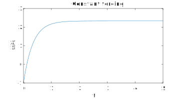
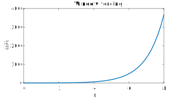
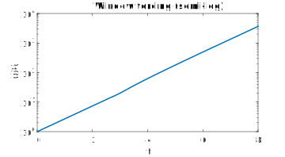
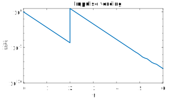
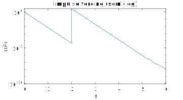

Section 1.4 Linear, constant-coefficients
¶Refer to section 1.4 of the text (pp. 19-26).
For this section we will limit (1.3.1) to the important special case when the growth/decay rate, is constant:
\begin{equation}
\dd{y}{t} = ay(t) + q(t) \text{.}\label{eq-first-linear-const}\tag{1.4.1}
\end{equation}
The term \(q(t)\) is called a forcing function or source function.
By multiplying (1.4.1) through by the integrating factor \(M(t)=e^{-at}\text{,}\) we can render it into a form easily solved by calculus:
\begin{align*}
e^{-at} y'(t) - (a e^{-at})y(t) \amp = e^{-at}q(t) \\
\dd{}{t}\bigl[ e^{-at} y(t) \bigr] \amp = e^{-at}q(t) \\
e^{-at} y(t) \amp = C + \int_0^t e^{-as}q(s)\, ds \text{.}
\end{align*}
In the last step above we used a definite integral whose value is zero when \(t=0\text{.}\) (We could have chosen any starting time, but this is the most convenient one.) Then it is easy to see that the integration constant satisfies \(C=y(0)\text{,}\) which is a bit less abstract. Altogether,
\begin{equation}
y(t) = e^{at}y(0) + \int_0^t e^{a(t-s)}q(s)\, ds\text{.}\label{eq-flc-solution}\tag{1.4.2}
\end{equation}
We can dissect this expression in some detail. The null solution \(e^{at}y(0)\) is by itself a solution to \(y'=ay\text{.}\) The particular solution represented by the integral is new. Think of the integral as a sum over all the moments \(s\lt t\text{.}\) At every such moment there is an input to \(y'\) of size \(q(s)\text{.}\) That little input evolves all on its own for the remaining time \(t-s\) according to \(e^{a(t-s)}q(s)\text{.}\) So it's equivalent to having started a problem with initial value \(q(s)\) at that moment.
Hence the complete solution combines the natural evolution of the true initial condition at time zero, plus the contributions of momentary "kicks" evolving from each instant up to the present. This idea proves to be quite fundamental to all linear problems, though the mathematical details will get more complicated.
Subsection 1.4.1 Constant forcing
¶Suppose \(q(t)\equiv q\text{,}\) a constant. Applying the solution formula gives
\begin{equation*}
y(t) = e^{at}y(0) + \frac{q}{a}\bigl( e^{at}-1 \bigr)\text{.}
\end{equation*}
This solution is of particular interest when \(a\lt 0\text{.}\) In that case \(e^{at}\to 0\) as \(t\to\infty\text{,}\) so \(y\to -q/a\text{,}\) a constant value, in the long term. In some contexts we might say that \(y\) "relaxes" to a steady state value \(y_\infty=-q/a\text{.}\)
It might be simplest to ignore this formula and just apply (1.4.2) as needed, since the integration involved is easy.
To solve \(y'+3y=7\text{,}\) we have
\begin{equation*}
y(t) = e^{-3t}y(0) + 7 \int_0^t e^{-3(t-s)} \, ds = e^{-3t}y(0) + \frac{7}{3}( 1 - e^{-3t})\text{.}
\end{equation*}
From here it's immediate to see that \(y\to 7/3\) as \(t\to\infty\text{.}\)
dydt = @(t,y) 7-3*y;
[t,y] = ode45(dydt,[0,5],-1);
plot(t,y)
xlabel('t'), ylabel('y(t)')
title('Constant forcing')

Be careful! To use our formula, you may have to rewrite the given problem in our standard form first. E.g. \(3y+12y=12\text{,}\) should be expressed as \(y'=-4y+4\text{,}\) so that we find \(a=-4\text{,}\) etc.
Subsection 1.4.2 Step forcing
¶The unit step function or Heaviside function \(H(t)\) is zero for \(t\le 0\) and one for \(t\gt 0\text{.}\) It represents throwing on a switch. Usually in this situation we assume \(y(0)=0\text{,}\) that is, the system is at rest until the switch is turned on.
The solution when \(q(t)=kH(t)\) is called the step response and follows from the solution formula as \(y(t) = \frac{k}{a}\bigl( e^{at}-1 \bigr)\text{.}\) This is exactly the same as the solution for constant forcing \(q(t)\equiv k\text{,}\) because what happened for \(t\lt 0\) is irrelevant to the future behavior.
It's often useful to introduce a delay into the switch. To have the forcing turn on at time \(T\gt 0\text{,}\) we use \(H(t-T)\text{.}\) The response when \(q(t)=kH(t-T)\) becomes
\begin{equation*}
y(t) = \frac{k}{a}H(t-T) \bigl[ e^{a(t-T)}-1 \bigr]\text{.}
\end{equation*}
The step function remains in the solution because nothing happens until the switch is turned on. However, the solution remains continuous, with \(y(T)=0\text{.}\) If you think about the ODE, \(y'=ay+kH(t-T)\text{,}\) the fact that \(y\) is continuous means that \(y'\) must have a jump of size \(k\) at \(t=T\text{.}\)
It's worth mentioning here the related idea of a window function, which turns on and then back off. To get a forcing that is one only between times \(S\) and \(T\text{,}\) for example, we can use \(q(t)=H(t-S)-H(t-T)\text{.}\) The formulas for the window solution become a bit messy, so we will skip them for now.
Example 1.4.2
Let's solve \(y'=y+f(t)\text{,}\) where \(f(t)\) is 5 for \(3 \lt t \le 6\) and zero elsewhere. Again, it's probably easiest to get comfortable with applying the general solution formula (1.4.2):
\begin{equation*}
y(t) = e^{t}y(0) + \int_0^t e^{t-s}q(s)\, ds\text{.}
\end{equation*}
The integral part is zero if \(t \le 3\text{.}\) For \(t\in(3,6)\) we get
\begin{equation*}
y(t) = e^{t}y(0) + 5 \int_3^t e^{t-s} \, ds = e^{t}y(0) - 5(1-e^{t-3}) \text{.}
\end{equation*}
Finally, for \(t \ge 6\) we get
\begin{equation*}
y(t) = e^{t}y(0) + 5 \int_3^6 e^{t-s} \, ds = e^{t}y(0) - 5(e^{t-6}-e^{t-3}) \text{.}
\end{equation*}
(We can always express piecewise results like this using step functions and window functions. We'll get back to that eventually.)
step = @(t) double(t>0);
dydt = @(t,y) y + 5*(step(t-3) - step(t-6));
[t,y] = ode45(dydt,[0,8],1);
plot(t,y)
xlabel('t'), ylabel('y(t)')
title('Window forcing')

step = @(t) double(t>0);
dydt = @(t,y) y + 5*(step(t-3) - step(t-6));
[t,y] = ode45(dydt,[0,8],1);
semilogy(t,y)
xlabel('t'), ylabel('y(t)')
title('Window forcing (semi-log)')

Subsection 1.4.3 Impulse forcing
¶We next come to a curious type of input called an impulse. The idea is that the system is given an instantaneous jolt. To make this work, start by imagining a forcing of constant strength \(1/h\) that is turned on only for \(0\lt t \le h\text{:}\)
\begin{equation*}
\delta_h(t) = \frac{H(t-h)-H(t)}{h}\text{.}
\end{equation*}
The area under \(\delta_h\) is one for all \(h \gt 0\text{.}\)
Now we idealize the situation by taking the limit as \(h\to 0\text{.}\) Effectively, we are taking the derivative of a step. The resulting "function", which we call \(\delta(t)\text{,}\) is zero at all points except \(t=0\text{,}\) yet should have unit area under its curve!
It's not really possible for a function to do that (something that originally sent mathematicians into a tizzy for a couple decades), but let's set that aside for now. We will be safe if we stick to statements about integrals. If \(I\) is any interval containing \([0,h]\) and \(f(t)\) is any other function, then
\begin{equation*}
\int_{I} \delta_h(t) f(t)\,dt = \int_{0}^h \frac{1}{h} f(t)\,dt= \frac{\phi(h)-\phi(0)}{h}\text{,}
\end{equation*}
where \(\phi\) is an antiderivative of \(f\text{.}\) In the limit this suggests
\begin{equation*}
\int_I \delta(t)f(t)\, dt = f(0)\text{.}
\end{equation*}
As with the step, we often want to introduce a delay in the impulse by using \(\delta(t-T)\text{.}\) Then the math becomes
\begin{equation}
\int_I \delta(t-T)f(t)\, dt = f(T)\text{,}\label{eq-delta-integrate}\tag{1.4.3}
\end{equation}
where \(I\) is any interval containing \(T\text{.}\) This is the key identity for working with impulses.
The solution to the linear ODE with an impulse forcing is called an impulse response. Consider \(y'=at+\delta_h(t)\text{,}\) with \(y(0)=0\text{.}\) Integration of both sides over \([0,h]\) gives \(y(h)=ath + 1\text{.}\) In the limit, this suggests \(y(0^+)=1\text{,}\) where I have used the plus superscript to suggest "at some infinitesimally later moment." When the math is worked out nicely to avoid the seeming contradiction, the conclusion is that the impulse response is \(y(t)=e^{at}\text{,}\) which is the same as if \(y(0)=1\text{.}\) More generally we have the following.
Fact 1.4.3 Impulse forcing (first order)
In a first-order linear ODE, an impulse forcing is equivalent to adding the impulse amplitude to the momentary solution value and then doing unforced evolution.
The conclusion with a delayed impulse plays out as follows: solving \(y'=at+b\delta(t-T)\) leads to \(y(t)=e^{at}y(0)+ be^{a(t-T)}H(t-T)\text{.}\) (Note: equation (15) on page 24 of Strang is wrong.) But the beauty of working with deltas is that they turn integration into function evaluation, and working directly from (1.4.2) continues to be straightforward.
Example 1.4.4
Suppose we solve \(y'+5y=3\delta(t-2)\text{,}\) with \(y(0)=1\text{.}\) Start with
\begin{equation*}
y(t) = e^{-5t} + 3 \int_0^t e^{-5(t-s)}\delta(s-2)\, ds\text{.}
\end{equation*}
If \(t \lt 2\text{,}\) the integration interval does not contain the impulse, so the solution is just \(e^{-5t}\text{.}\) But if \(t \gt 2\text{,}\) \(y(t) = e^{-5t} + 3 e^{-5(t-2)}\text{.}\)
dydt = @(t,y) -5*y;
[t1,y1] = ode45(dydt,[0,2],1);
[t2,y2] = ode45(dydt,[2,6],3+y1(end));
plot([t1;t2],[y1;y2])
xlabel('t'), ylabel('y(t)')
title('Impulse forcing')
semilogy([t1;t2],[y1;y2])
xlabel('t'), ylabel('y(t)')
title('Impulse forcing')

dydt = @(t,y) -5*y;
[t1,y1] = ode45(dydt,[0,2],1);
[t2,y2] = ode45(dydt,[2,6],3+y1(end));
semilogy([t1;t2],[y1;y2])
xlabel('t'), ylabel('y(t)')
title('Impulse forcing (semi-log)')

Subsection 1.4.4 Exponential forcing
¶There is one final easy forcing case for working with (1.4.2): \(q(t)=e^{ct}\) for constant \(c\text{.}\) Plugging this into (1.4.2) yields
\begin{align*}
y(t) \amp = e^{at}y(0) + \frac{e^{at}}{c-a} \bigl( e^{t(c-a)}-1 \bigr)\\
\amp = e^{at}y(0) + \frac{1}{c-a} \bigl( e^{ct}-e^{at} \bigr)\text{.}
\end{align*}
Clearly this won't work, however, if \(c=a\) The text calls this case resonance, though that's maybe a stretch of how that term is typically understood.
In the resonant case, we can go back to (1.4.2), and we get \(y(t) = e^{at}y(0) + te^{at}\text{.}\) That extra factor of \(t\) is new, and the first time something genuinely non-exponential has arisen for the linear problem.